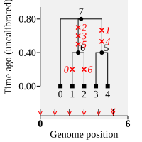
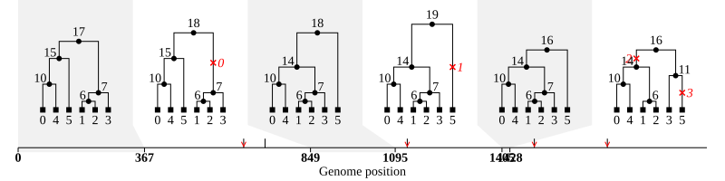
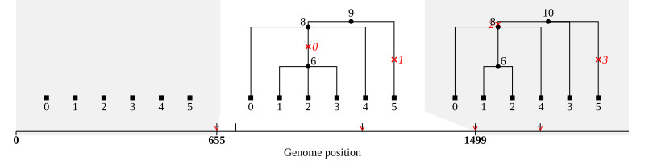
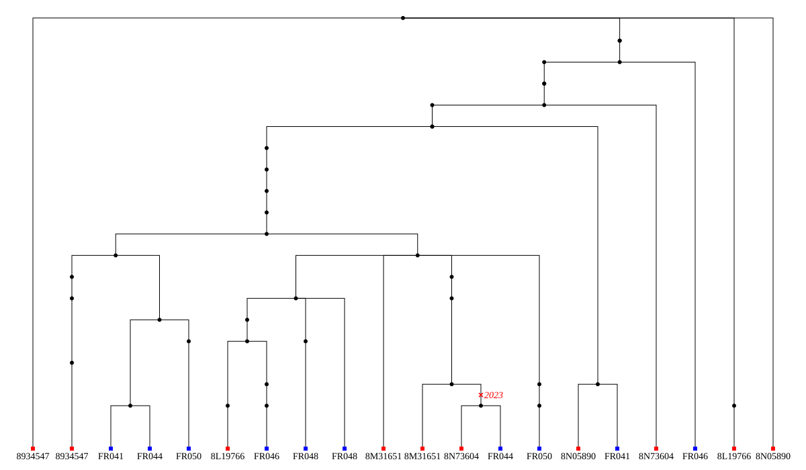

Tutorial#
Toy example#
Suppose that we have observed the following data::
sample haplotype
0 AGCGAT
1 TGACAG
2 AGACAC
3 ACCGCT
4 ACCGCT
Here we have phased haplotype data for five samples at six sites. We wish to infer the
genealogies that gave rise to this data set. To import the data into tsinfer we must
know the ancestral state for each site we wish to use for inference; there are many
methods for achieving this: details are outside the scope of this manual, but we have
started a discussion topic on
this issue to provide some recommendations. Assuming that we
know the ancestral state, we can then import our data into a tsinfer
Sample data file using the Python
API:
import tsinfer
from tskit import MISSING_DATA
with tsinfer.SampleData(sequence_length=6) as sample_data:
sample_data.add_site(0, [0, 1, 0, 0, 0], ["A", "T"], ancestral_allele=0)
sample_data.add_site(1, [0, 0, 0, 1, 1], ["G", "C"], ancestral_allele=0)
sample_data.add_site(2, [0, 1, 1, 0, 0], ["C", "A"], ancestral_allele=0)
sample_data.add_site(3, [0, 1, 1, 0, 0], ["G", "C"], ancestral_allele=MISSING_DATA)
sample_data.add_site(4, [0, 0, 0, 1, 1], ["A", "C"], ancestral_allele=0)
sample_data.add_site(5, [0, 1, 2, 0, 0], ["T", "G", "C"], ancestral_allele=0)
Here we create a new SampleData object for five samples. We then
sequentially add the data for each site one-by-one using the
SampleData.add_site() method. The first argument for add_site is the
position of the site in genome coordinates. This can be any positive value
(even floating point), but site positions must be unique and sites must be
added in increasing order of position. For convenience we’ve given the sites
position 0 to 5 here, but they could be any values. The second argument for
add_site is a list of genotypes for the site. Each value in a genotypes
array g is an integer, giving an index into the list provided as the third
argument to add_site: the list of alleles for this site. The fourth argument
is the index in the allele list which represents the ancestral state.
Each call to add_site thus stores a single column of the
original haplotype data above. For example, the ancestral and derived states for
the site at position 0 are “A” and “T” and the genotypes are 01000: this encodes
the first column, ATAAA.
Not all sites are used for genealogical inference: this includes fixed sites,
singletons (in this example, the site at position 0), sites
with more than 2 alleles (e.g. the site at position 5), and sites where the ancestral
state is unknown (marked as tskit.MISSING_DATA, e.g. the site at position 3).
Additionally, during the next step, extra sites can be flagged as not for use in
inferring the genealogy, for example if they are deemed unreliable (this is done
via the exclude_positions parameter). Note, however, that even if a site is not used
for genealogical inference, its genetic variation will still be encoded in the final
tree sequence.
Once we have stored our data in a SampleData object, we can easily infer
a tree sequence using the Python
API:
inferred_ts = tsinfer.infer(sample_data)
And that’s it: we now have a fully functional tskit.TreeSequence
object that we can interrogate in the usual ways. For example, we can look
at the stored haplotypes and the inferred topology:
print("==Haplotypes==")
for sample_id, h in enumerate(inferred_ts.haplotypes()):
print(sample_id, h, sep="\t")
inferred_ts.draw_svg(y_axis=True)
==Haplotypes==
0 AGCGAT
1 TGACAG
2 AGACAC
3 ACCGCT
4 ACCGCT

You will notice that the sample sequences generated by this tree sequence are identical
to the input haplotype data: apart from the imputation of
missing data, tsinfer is guaranteed to
losslessly encode any given input data, regardless of the inferred topology.
Note also that the inferred tree contains a polytomy at the root (i.e. the root node
has more than two children) . This is a
common feature of trees inferred by tsinfer and signals that there was not
sufficient information to resolve the tree at this internal node.
Each internal (non-sample) node in this inferred tree represents an ancestral sequence, constructed on the basis of shared, derived alleles at one or more of the sites. By default, the time of each such node is not measured in years or generations, but is simply the frequency of the shared derived allele(s) on which the ancestral sequence is based. For this reason, the time units are described as “uncalibrated” in the plot, and trying to calculate statistics based on branch lengths will raise an error:
inferred_ts.diversity(mode="branch")
---------------------------------------------------------------------------
LibraryError Traceback (most recent call last)
/tmp/ipykernel_3291/2935518142.py in ?()
----> 1 inferred_ts.diversity(mode="branch")
/opt/hostedtoolcache/Python/3.10.16/x64/lib/python3.10/site-packages/tskit/trees.py in ?(self, sample_sets, windows, mode, span_normalise)
7991 window (defaults to True).
7992 :return: A numpy array whose length is equal to the number of sample sets.
7993 If there is one sample set and windows=None, a numpy scalar is returned.
7994 """
-> 7995 return self.__one_way_sample_set_stat(
7996 self._ll_tree_sequence.diversity,
7997 sample_sets,
7998 windows=windows,
/opt/hostedtoolcache/Python/3.10.16/x64/lib/python3.10/site-packages/tskit/trees.py in ?(self, ll_method, sample_sets, windows, mode, span_normalise, polarised)
7698 if np.any(sample_set_sizes == 0):
7699 raise ValueError("Sample sets must contain at least one element")
7700
7701 flattened = util.safe_np_int_cast(np.hstack(sample_sets), np.int32)
-> 7702 stat = self.__run_windowed_stat(
7703 windows,
7704 ll_method,
7705 sample_set_sizes,
/opt/hostedtoolcache/Python/3.10.16/x64/lib/python3.10/site-packages/tskit/trees.py in ?(self, windows, method, *args, **kwargs)
7661 def __run_windowed_stat(self, windows, method, *args, **kwargs):
7662 strip_dim = windows is None
7663 windows = self.parse_windows(windows)
-> 7664 stat = method(*args, **kwargs, windows=windows)
7665 if strip_dim:
7666 stat = stat[0]
7667 return stat
LibraryError: Statistics using branch lengths cannot be calculated when time_units is 'uncalibrated'. (TSK_ERR_TIME_UNCALIBRATED)
To add meaningful dates to an inferred tree sequence, allowing meaningful branch length
statistics to be calulated, you must use additional
software such as tsdate: the tsinfer
algorithm is only intended to infer the genetic relationships between the samples
(i.e. the topology of the tree sequence).
Simulation example#
The previous example showed how we can infer a tree sequence using the Python API for a trivial toy example. However, for real data we will not prepare our data and infer the tree sequence all in one go; rather, we will usually split the process into at least two distinct steps.
The first step in any inference is to prepare your data and import it into a sample data file. For simplicity here we’ll use Python to simulate some data under the coalescent with recombination, using msprime:
import builtins
import sys
import msprime
import tsinfer
if getattr(builtins, "__IPYTHON__", False): # if running IPython: e.g. in a notebook
from tqdm.notebook import tqdm
num_diploids, seq_len = 100, 10_000
name = "notebook-simulation"
else: # Take parameters from the command-line
from tqdm import tqdm
num_diploids, seq_len = int(sys.argv[1]), float(sys.argv[2])
name = "cli-simulation"
ts = msprime.sim_ancestry(
num_diploids,
population_size=10**4,
recombination_rate=1e-8,
sequence_length=seq_len,
random_seed=6,
)
ts = msprime.sim_mutations(ts, rate=1e-8, random_seed=7)
ts.dump(name + "-source.trees")
print(
f"Simulated {ts.num_samples} samples over {seq_len/1e6} Mb:",
f"{ts.num_trees} trees and {ts.num_sites} sites"
)
with tsinfer.SampleData(
path=name + ".samples",
sequence_length=ts.sequence_length,
num_flush_threads=2
) as sim_sample_data:
for var in tqdm(ts.variants(), total=ts.num_sites):
sim_sample_data.add_site(var.site.position, var.genotypes, var.alleles)
print("Stored output in", name + ".samples")
Simulated 200 samples over 0.01 Mb: 20 trees and 20 sites
/home/runner/work/tskit-site/tskit-site/tsinfer/formats.py:458: FutureWarning: The LMDBStore is deprecated and will be removed in a Zarr-Python version 3, see https://github.com/zarr-developers/zarr-python/issues/1274 for more information.
return zarr.LMDBStore(self.path, subdir=False, map_size=map_size)
Stored output in notebook-simulation.samples
/home/runner/work/tskit-site/tskit-site/tsinfer/formats.py:428: FutureWarning: The LMDBStore is deprecated and will be removed in a Zarr-Python version 3, see https://github.com/zarr-developers/zarr-python/issues/1274 for more information.
store = zarr.LMDBStore(
Here we first run a simulation then, as before, we create a SampleData
instance to store the data we have simulated. When doing this, we use the extra
parameters path, sequence_length and num_flush_threads. The first provides a
filename in which to permanently store the information. The second defines the
overall coordinate space for site positions, so that this value can
be recovered in the final tree sequence that we output later. Finally,
num_flush_threads=2 tells tsinfer to use two background threads for
compressing data and flushing it to disk.
If we store this code in a file named simulate-data.py, we can run it on the
command line, providing parameters to generate much bigger datasets (and showing
a progress meter using tqdm to keep track of how
the process of compressing and storing the sample data is progressing):
% python3 simulate-data.py 5000 10_000_000
Simulated 10000 samples over 10.0 Mb: 36204 trees and 38988 sites
100%|██████████████████████████████████████████| 38988/38988 [00:08<00:00, 4617.55it/s]
Here, we simulated a sample of 10 thousand chromosomes, each 10Mb long, under
human-like parameters. That has created 39K segregating sites. The output
above shows the state of the progress meter at the end of this process,
indicating that it took about 8 seconds to import the data for this simulation into
tsinfer’s sample data format.
Note
If you already have a tree sequence file, and wish to create a sample data file from
it, you can use the tsinfer.SampleData.from_tree_sequence() method. For example,
the following snippet is equivalent to the data file creation part of the code above:
tsinfer.SampleData.from_tree_sequence(
ts, path="cli-simulation.samples", num_flush_threads=2)
Examining the files on the command line, we then see the following::
$ ls -lh cli-simulation*
-rw-r--r-- 1 user group 8.2M 14 Oct 13:45 cli-simulation-source.trees
-rw-r--r-- 1 user group 22M 14 Oct 13:45 cli-simulation.samples
The cli-simulation.samples file is quite small, being less than three times the size of the
original msprime tree sequence file. The tsinfer command line interface
provides a useful way to examine files in more detail using the list (or ls) command:
$ tsinfer ls cli-simulation.samples
path = cli-simulation.samples
file_size = 21.6 MiB
format_name = tsinfer-sample-data
format_version = (5, 1)
finalised = True
uuid = 422b25be-fe6e-4c25-b302-af2715fd9c93
num_provenances = 0
provenances/timestamp = shape=(0,); dtype=object;
provenances/record = shape=(0,); dtype=object;
sequence_length = 10000000.0
metadata_schema = {'codec': 'json'}
metadata = {}
num_populations = 0
num_individuals = 10000
num_samples = 10000
num_sites = 38988
populations/metadata_schema = None
populations/metadata = shape=(0,); dtype=object;
individuals/metadata_schema = None
individuals/metadata = shape=(10000,); dtype=object;
individuals/location = shape=(10000,); dtype=object;
individuals/time = shape=(10000,); dtype=float64;uncompressed size=80.0 kB
individuals/population = shape=(10000,); dtype=int32;uncompressed size=40.0 kB
individuals/flags = shape=(10000,); dtype=uint32;uncompressed size=40.0 kB
samples/individual = shape=(10000,); dtype=int32;uncompressed size=40.0 kB
sites/position = shape=(38988,); dtype=float64;uncompressed size=311.9 kB
sites/time = shape=(38988,); dtype=float64;uncompressed size=311.9 kB
sites/alleles = shape=(38988,); dtype=object;
sites/genotypes = shape=(38988, 10000); dtype=int8;uncompressed size=389.9 MB
sites/metadata_schema = None
sites/metadata = shape=(38988,); dtype=object;
Most of this output is not particularly interesting here, but we can see that the
sites/genotypes array which holds all of the sample genotypes (and thus the vast bulk of the
actual data) requires about 390MB uncompressed. The tsinfer sample data format is therefore
achieving a roughly 20X compression in this case. In practice this means we can keep such files
lying around without taking up too much space.
Once we have our .samples file created, running the inference is straightforward.
We can do so within Python, or use tsinfer on
the command-line, which is useful when inference is expected to take a long time:
Show code cell source
# Infer & save a ts from the notebook simulation. This could also be done
# from the command-line using `tsinfer infer notebook-simulation.samples`
tsinfer.infer(sim_sample_data).dump(name + ".trees")
$ tsinfer infer cli-simulation.samples -p -t 4
ga-add (1/6)100%|█████████████████████████████| 39.0k/39.0k [00:02, 16.0kit/s]
ga-gen (2/6)100%|█████████████████████████████| 26.3k/26.3k [00:17, 1.52kit/s]
ms-muts (4/6)100%|█████████████████████████████| 35.1k/35.1k [00:00, 48.2kit/s]
ma-match (3/6)100%|████████████████████████████▉| 26.3k/26.3k [07:21, 60.5it/s]
ms-match (5/6)100%|█████████████████████████████| 10.0k/10.0k [10:32, 15.8it/s]
ms-paths (6/6)100%|█████████████████████████████| 10.0k/10.0k [00:00, 40.8kit/s]
ms-muts (7/6)100%|█████████████████████████████| 35.1k/35.1k [00:00, 42.1kit/s]
ms-xsites (8/6)100%|█████████████████████████████| 3.85k/3.85k [00:05, 688it/s]
Running the infer command runs the full inference pipeline in one go (the individual steps
are explained here), writing the output, by default, to the tree sequence
file simulation.trees. We provided two extra arguments to infer: the -p flag
(--progress) gives us the progress bars show above, and -t 4 (--num-threads=4) tells
tsinfer to use four worker threads whenever it can use them.
This inference was run on a Core i5 processor (launched 2009) with 4GiB of RAM, and took about eighteen minutes. The maximum memory usage was about 600MiB.
Looking at our output files, we see::
$ ls -lh cli-simulation*
-rw-r--r-- 1 user group 8.2M 14 Oct 13:45 cli-simulation-source.trees
-rw-r--r-- 1 user group 22M 14 Oct 13:45 cli-simulation.samples
-rw-r--r-- 1 user group 8.1M 14 Oct 13:50 cli-simulation.trees
Therefore our output tree sequence file that we have just inferred in less than
five minutes is even smaller than the original msprime simulated tree sequence!
Because the output file is also a tskit.TreeSequence, we can use the same API
to work with both. For example, to load up the original and inferred tree sequences
from their corresponding .trees files you can simply use the tskit.load()
function, as shown below.
However, there are thousands of trees in these tree sequences, each of which has
10 thousand samples: much too much to easily visualise. Therefore, in the code below, we
we subset both tree sequences down to their minimal representations for the first six
sample nodes using tskit.TreeSequence.simplify(), while keeping all sites, even if
they do not show genetic variation between the six selected samples.
Note
Using this tiny subset of the overall data allows us to get an informal
feel for the trees that are inferred by tsinfer, but this is certainly
not a recommended approach for validating the inference!)
Once we’ve subsetted the tree sequences down to something that we can comfortably look at, we can plot the trees in particular regions of interest, for example the first 2kb of genome. Below, for simplicity we use the smaller dataset that was simulated and inferred within the the notebook, but exactly the same code will work with the larger version run from the cli simulation.
import tskit
subset = range(0, 6) # show first 6 samples
limit = (0, 2_000) # show only the trees covering the first 2kb
prefix = "notebook" # Or use "cli" for the larger example
source = tskit.load(prefix + "-simulation-source.trees")
source_subset = source.simplify(subset, filter_sites=False)
print(f"True tree seq, simplified to {len(subset)} sampled genomes")
source_subset.draw_svg(size=(800, 200), x_lim=limit, time_scale="rank")
True tree seq, simplified to 6 sampled genomes

inferred = tskit.load(prefix + "-simulation.trees")
inferred_subset = inferred.simplify(subset, filter_sites=False)
print(f"Inferred tree seq, simplified to {len(subset)} sampled genomes")
inferred_subset.draw_svg(size=(800, 200), x_lim=limit)
Inferred tree seq, simplified to 6 sampled genomes

There are a number of things to note when comparing the plots above. Most
obviously, the first tree in the inferred tree sequence is empty: by default, tsinfer
will not generate a genealogy before the first site in the genome (here, position 655)
or past the last site, as there is, by definition, no data in these regions.
You can also see that the inferred tree sequence has fewer trees than the original, simulated one. There are two reasons for this. First, there are some tree changes that do not involve a change of topology (e.g. the first two trees in the original tree sequence are topologically identical, as are two trees after that). Even if we had different mutations on the different edges in these trees, such tree changes are unlikely to be spotted. Second, our inference depends on the mutational information that is present. If no mutations fall on a particular edge in the tree sequence, then we have no way of inferring that this edge existed. The fact that there are no mutations in the first, third, and fifth trees shows that tree changes can occur without associated mutations. As a result, there will be tree transitions that we cannot pick up. In the simulation that we performed, the mutation rate is equal to the recombination rate, and so we expect that many recombinations will be invisible to us.
For similar reasons, there will be many nodes in the tree at which polytomies occur. Here we correctly infer that sample nodes 0 and 4 group together, as do 1 and 2. However, in the middle inferred tree we were not able to distinguish whether node 3 was closer to node 1 or 2, so we have three children of node 7 in that tree.
Finally, you should note that inference does not always get the right answer. At the first site in the inferred trees, node 5 is placed as an outgroup, but at this site it is actually closer to the group consisting of nodes 0 and 4.
Note
Other than the sample node IDs, it is meaningless to compare node numbers in the source and inferred tree sequences.
Data example#
Inputting real data for inference is similar in principle to the examples above:
you simply iterate over the sites in your data file, calling SampleData.add_site()
for each variable site. We do not provide methods to read directly from other formats, as
these formats are often too complex for automatic conversion. However, many Python
libraries are available for reading different genomic data formats, and writing a script
to iterate over the sites in such files is usually a fairly simple task. The example
below shows how this can be done for a VCF file, using a freely available VCF reading
library.
Reading a VCF#
A common way to store genetic variation data is as a VCF (Variant Call Format) file.
The CYVCF2 library provides a relatively fast
Python interface for reading VCF files. The following script demonstrates how to infer a
tree sequence from a simple VCF file. In particular the function below named
add_diploid_sites illustrates how to iterate over the variants in a CYVCF2.VCF
object and add them to a tsinfer sample data file. This particular script assumes
that the VCF describes a set of phased, diploid individuals, and has the ancestral state
present in the INFO field of the VCF (otherwise it takes the reference allele as the
ancestral state). For example data, we use a publicly available VCF file of the genetic
variants from chromosome 24 of ten Norwegian and French house sparrows,
Passer domesticus (thanks to Mark Ravinet for the data file):
import cyvcf2
import tsinfer
def add_diploid_sites(vcf, samples):
"""
Read the sites in the vcf and add them to the samples object.
"""
# You may want to change the following line, e.g. here we allow
# "*" (a spanning deletion) to be a valid allele state
allele_chars = set("ATGCatgc*")
pos = 0
progressbar = tqdm(total=samples.sequence_length, desc="Read VCF", unit='bp')
for variant in vcf: # Loop over variants, each assumed at a unique site
progressbar.update(variant.POS - pos)
if pos == variant.POS:
print(f"Duplicate entries at position {pos}, ignoring all but the first")
continue
else:
pos = variant.POS
if any([not phased for _, _, phased in variant.genotypes]):
raise ValueError("Unphased genotypes for variant at position", pos)
alleles = [variant.REF.upper()] + [v.upper() for v in variant.ALT]
ancestral = variant.INFO.get("AA", ".") # "." means unknown
# some VCFs (e.g. from 1000G) have many values in the AA field: take the 1st
ancestral = ancestral.split("|")[0].upper()
if ancestral == "." or ancestral == "":
ancestral_allele = MISSING_DATA
# alternatively, you could specify `ancestral = variant.REF.upper()`
else:
ancestral_allele = alleles.index(ancestral)
# Check we have ATCG alleles
for a in alleles:
if len(set(a) - allele_chars) > 0:
print(f"Ignoring site at pos {pos}: allele {a} not in {allele_chars}")
continue
# Map original allele indexes to their indexes in the new alleles list.
genotypes = [g for row in variant.genotypes for g in row[0:2]]
samples.add_site(pos, genotypes, alleles, ancestral_allele=ancestral_allele)
def chromosome_length(vcf):
assert len(vcf.seqlens) == 1
return vcf.seqlens[0]
vcf_location = "_static/P_dom_chr24_phased.vcf.gz"
# NB: could also read from an online version by setting vcf_location to
# "https://github.com/tskit-dev/tsinfer/raw/main/docs/_static/P_dom_chr24_phased.vcf.gz"
vcf = cyvcf2.VCF(vcf_location)
with tsinfer.SampleData(
path="P_dom_chr24_phased.samples", sequence_length=chromosome_length(vcf)
) as samples:
add_diploid_sites(vcf, samples)
print(
"Sample file created for {} samples ".format(samples.num_samples)
+ "({} individuals) ".format(samples.num_individuals)
+ "with {} variable sites.".format(samples.num_sites),
flush=True,
)
# Do the inference
ts = tsinfer.infer(samples)
print(
"Inferred tree sequence: {} trees over {} Mb ({} edges)".format(
ts.num_trees, ts.sequence_length / 1e6, ts.num_edges
)
)
[W::bcf_hrec_check] Missing ID attribute in one or more header lines
[W::bcf_hdr_register_hrec] An INFO field has no Type defined. Assuming String
[W::bcf_hdr_register_hrec] An INFO field has no Number defined. Assuming '.'
Sample file created for 20 samples (20 individuals) with 13192 variable sites.
Inferred tree sequence: 6845 trees over 7.077728 Mb (38045 edges)
On a modern computer, this should only take a few seconds to run.
Note
This code can also be modified to read huge VCF files in parallel, see this issue.
Adding more information#
As the output indicates, we have created 20 individuals, each with a single chromosome,
rather than (as we probably intended) 10 individuals each with 2 chromosomes. That’s
because the script has not called SampleData.add_individual(), so
tsinfer has assumed that each input chromosome belongs to a single (haploid)
individual. Although this is perfectly
OK and does not invalidate further analysis, it may be difficult to match information
from the original VCF file with nodes in the tree sequence. Ideally, you should aim to
incorporate all necessary information into the sample data file, from where it will be
carried through into the final inferred tree sequence. The code below demonstrates not
only how to associate each pair of samples with a diploid individual, but also how to
allocate an identifier to these individuals by using the individual’s metadata field.
The code also gives a basic illustration of adding extra information about the
population from which each individual has
been sampled.
import json
def add_populations(vcf, samples):
"""
Add tsinfer Population objects and returns a list of IDs corresponding to the VCF samples.
"""
# In this VCF, the first letter of the sample name refers to the population
samples_first_letter = [sample_name[0] for sample_name in vcf.samples]
pop_lookup = {}
pop_lookup["8"] = samples.add_population(metadata={"country": "Norway"})
pop_lookup["F"] = samples.add_population(metadata={"country": "France"})
return [pop_lookup[first_letter] for first_letter in samples_first_letter]
def add_diploid_individuals(vcf, samples, populations):
for name, population in zip(vcf.samples, populations):
samples.add_individual(ploidy=2, metadata={"name": name}, population=population)
# Repeat as previously but add both populations and individuals
vcf_location = "_static/P_dom_chr24_phased.vcf.gz"
# NB: could also read from an online version by setting vcf_location to
# "https://github.com/tskit-dev/tsinfer/raw/main/docs/_static/P_dom_chr24_phased.vcf.gz"
vcf = cyvcf2.VCF(vcf_location)
with tsinfer.SampleData(
path="P_dom_chr24_phased.samples", sequence_length=chromosome_length(vcf)
) as samples:
populations = add_populations(vcf, samples)
add_diploid_individuals(vcf, samples, populations)
add_diploid_sites(vcf, samples)
print(
"Sample file created for {} samples ".format(samples.num_samples)
+ "({} individuals) ".format(samples.num_individuals)
+ "with {} variable sites.".format(samples.num_sites),
flush=True,
)
# Do the inference
sparrow_ts = tsinfer.infer(samples)
print(
"Inferred tree sequence `{}`: {} trees over {} Mb".format(
"sparrow_ts", sparrow_ts.num_trees, sparrow_ts.sequence_length / 1e6
)
)
# Check the metadata
for sample_node_id in sparrow_ts.samples():
individual_id = sparrow_ts.node(sample_node_id).individual
population_id = sparrow_ts.node(sample_node_id).population
print(
"Node",
sample_node_id,
"labels a chr24 sampled from individual",
json.loads(sparrow_ts.individual(individual_id).metadata),
"in",
json.loads(sparrow_ts.population(population_id).metadata)["country"],
)
[W::bcf_hrec_check] Missing ID attribute in one or more header lines
[W::bcf_hdr_register_hrec] An INFO field has no Type defined. Assuming String
[W::bcf_hdr_register_hrec] An INFO field has no Number defined. Assuming '.'
Sample file created for 20 samples (10 individuals) with 13192 variable sites.
Inferred tree sequence `sparrow_ts`: 6845 trees over 7.077728 Mb
Node 0 labels a chr24 sampled from individual {'name': '8934547'} in Norway
Node 1 labels a chr24 sampled from individual {'name': '8934547'} in Norway
Node 2 labels a chr24 sampled from individual {'name': '8L19766'} in Norway
Node 3 labels a chr24 sampled from individual {'name': '8L19766'} in Norway
Node 4 labels a chr24 sampled from individual {'name': '8M31651'} in Norway
Node 5 labels a chr24 sampled from individual {'name': '8M31651'} in Norway
Node 6 labels a chr24 sampled from individual {'name': '8N05890'} in Norway
Node 7 labels a chr24 sampled from individual {'name': '8N05890'} in Norway
Node 8 labels a chr24 sampled from individual {'name': '8N73604'} in Norway
Node 9 labels a chr24 sampled from individual {'name': '8N73604'} in Norway
Node 10 labels a chr24 sampled from individual {'name': 'FR041'} in France
Node 11 labels a chr24 sampled from individual {'name': 'FR041'} in France
Node 12 labels a chr24 sampled from individual {'name': 'FR044'} in France
Node 13 labels a chr24 sampled from individual {'name': 'FR044'} in France
Node 14 labels a chr24 sampled from individual {'name': 'FR046'} in France
Node 15 labels a chr24 sampled from individual {'name': 'FR046'} in France
Node 16 labels a chr24 sampled from individual {'name': 'FR048'} in France
Node 17 labels a chr24 sampled from individual {'name': 'FR048'} in France
Node 18 labels a chr24 sampled from individual {'name': 'FR050'} in France
Node 19 labels a chr24 sampled from individual {'name': 'FR050'} in France
Analysis#
To analyse your inferred tree sequence you can use all the analysis functions built in to the tskit library. The tskit tutorial provides much more detail. Below we just give a flavour of the possibilities.
To quickly eyeball small datasets, we can draw the entire tree sequence, or
draw() the tree at any particular genomic position. The following
code demonstrates how to use the tskit.TreeSequence.at() method to obtain the tree
1Mb from the start of the sequence, and plot it, colouring the tips according to
population:
colours = {"Norway": "red", "France": "blue"}
colours_for_node = {}
for n in sparrow_ts.samples():
population_data = sparrow_ts.population(sparrow_ts.node(n).population)
colours_for_node[n] = colours[json.loads(population_data.metadata)["country"]]
individual_for_node = {}
for n in sparrow_ts.samples():
individual_data = sparrow_ts.individual(sparrow_ts.node(n).individual)
individual_for_node[n] = json.loads(individual_data.metadata)["name"]
tree = sparrow_ts.at(1e6)
tree.draw(
path="tree_at_1Mb.svg",
height=700,
width=1200,
node_labels=individual_for_node,
node_colours=colours_for_node,
)

This tree seems to suggest that Norwegian and French individuals may not fall into
discrete groups on the tree, but be part of a larger mixing population. Note, however,
that this is only one of thousands of trees, and may not be typical of the genome as a
whole. Additionally, most data sets will have far more samples than this example, so
trees visualized in this way are likely to be huge and difficult to understand. As in
the simulation example above, one possibility
is to simplify() the tree sequence to a limited number of
samples, but it is likely that most studies will
instead rely on various statistical summaries of the trees. Storing genetic data as a
tree sequence makes many of these calculations fast and efficient, and tskit has both a
set of commonly used methods and a framework that
generalizes population genetic statistics. For example,
the allele or site frequency spectrum (SFS) can be calculated using
tskit.TreeSequence.allele_frequency_spectrum() and the allelic diversity (“Tajima’s
\({\pi}\)”) using tskit.TreeSequence.diversity(), both of which can also be
calculated locally (e.g. per tree or in genomic windows). As
a basic example, here’s how to calculate genome-wide \(F_{st}\) between the Norwegian
and French (sub)populations:
samples_listed_by_population = [
sparrow_ts.samples(population=pop_id)
for pop_id in range(sparrow_ts.num_populations)
]
print("Fst between populations:", sparrow_ts.Fst(samples_listed_by_population))
Fst between populations: 0.014022798331082553
As noted above, the times of nodes are uncalibrated so we shouldn’t perform calculations that reply on branch lengths. However, some statistics, such as the genealogical nearest neighbour (GNN) proportions are calculated from the topology of the trees. using the individual and population metadata to format the results table in a tidy manner
import pandas as pd
gnn = sparrow_ts.genealogical_nearest_neighbours(
sparrow_ts.samples(), samples_listed_by_population
)
# Tabulate GNN nicely using a Pandas dataframe with named rows and columns
sample_nodes = [sparrow_ts.node(n) for n in sparrow_ts.samples()]
sample_ids = [n.id for n in sample_nodes]
sample_names = [
json.loads(sparrow_ts.individual(n.individual).metadata)["name"]
for n in sample_nodes
]
sample_pops = [
json.loads(sparrow_ts.population(n.population).metadata)["country"]
for n in sample_nodes
]
gnn_table = pd.DataFrame(
data=gnn,
index=[
pd.Index(sample_ids, name="Sample node"),
pd.Index(sample_names, name="Bird"),
pd.Index(sample_pops, name="Country"),
],
columns=[json.loads(p.metadata)["country"] for p in sparrow_ts.populations()],
)
print(gnn_table)
# Summarize GNN for all birds from the same country
print(gnn_table.groupby(level="Country").mean())
Norway France
Sample node Bird Country
0 8934547 Norway 0.541366 0.458634
1 8934547 Norway 0.546661 0.453339
2 8L19766 Norway 0.515789 0.484211
3 8L19766 Norway 0.483710 0.516290
4 8M31651 Norway 0.534920 0.465080
5 8M31651 Norway 0.595293 0.404707
6 8N05890 Norway 0.555456 0.444544
7 8N05890 Norway 0.542878 0.457122
8 8N73604 Norway 0.548133 0.451867
9 8N73604 Norway 0.508079 0.491921
10 FR041 France 0.422871 0.577129
11 FR041 France 0.471917 0.528083
12 FR044 France 0.477564 0.522436
13 FR044 France 0.407499 0.592501
14 FR046 France 0.520069 0.479931
15 FR046 France 0.498583 0.501417
16 FR048 France 0.479917 0.520083
17 FR048 France 0.467380 0.532620
18 FR050 France 0.556645 0.443355
19 FR050 France 0.489647 0.510353
Norway France
Country
France 0.479209 0.520791
Norway 0.537229 0.462771
From this, it can be seen that the genealogical nearest neighbours of birds in Norway
tend also to be in Norway, and vice versa for birds from France. In other words, there is
a small but noticable degree of population structure in the data. The bird 8L19766
and one of the chromosomes of bird FR046 seem to buck this trend, and it would
probably be worth checking these data points further (perhaps they are migrant birds),
and verifying if other chromosomes in these individuals show the same pattern.
Much more can be done with the genomic statistics built into tskit. For further information, please refer to the statistics section of the tskit documentation.